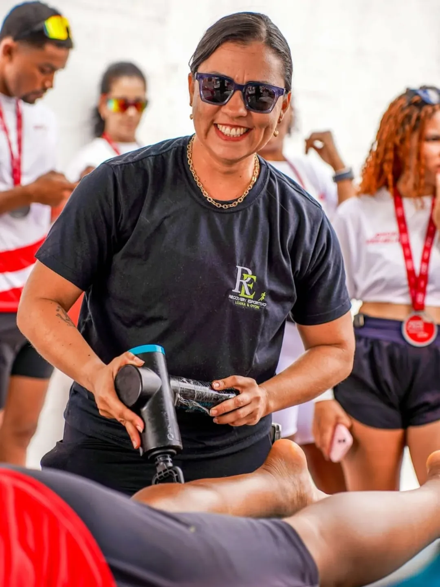
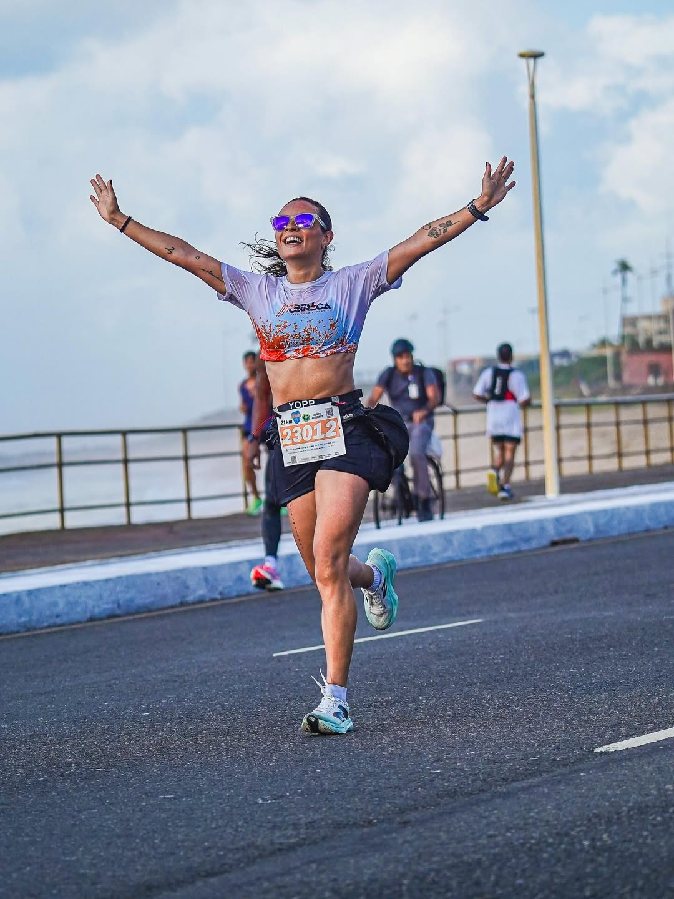
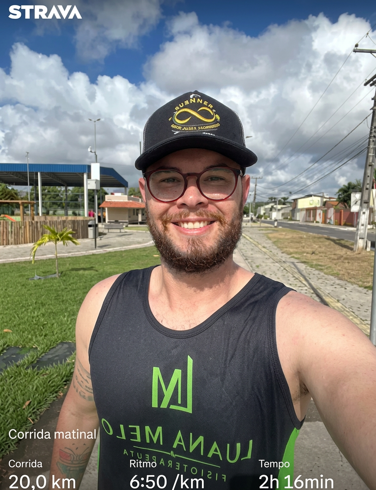
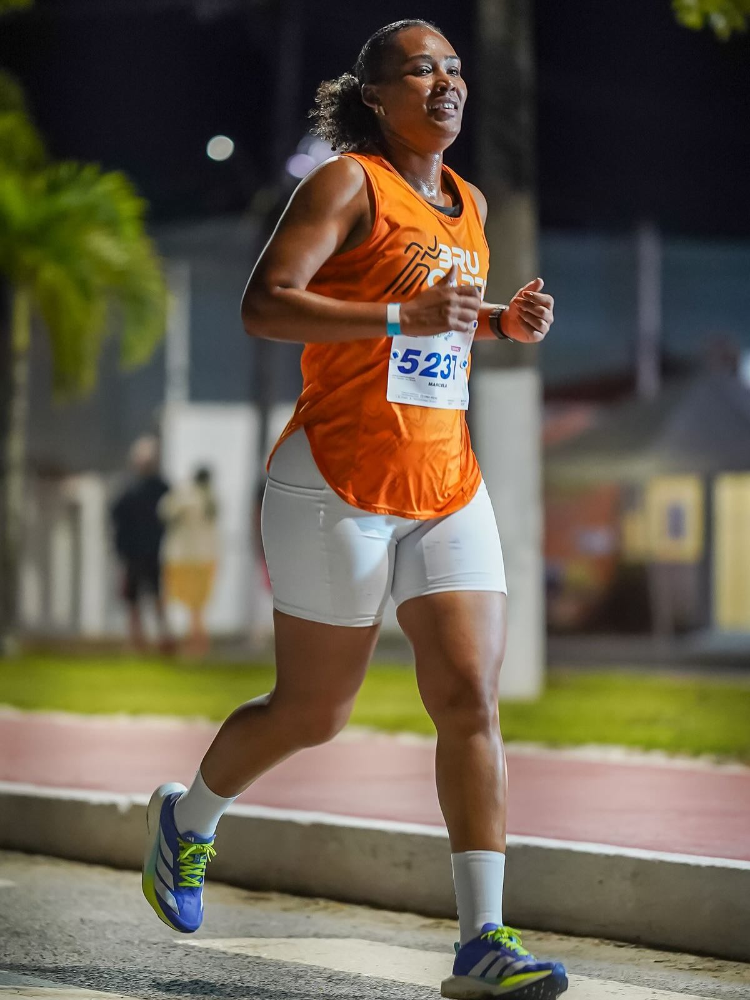
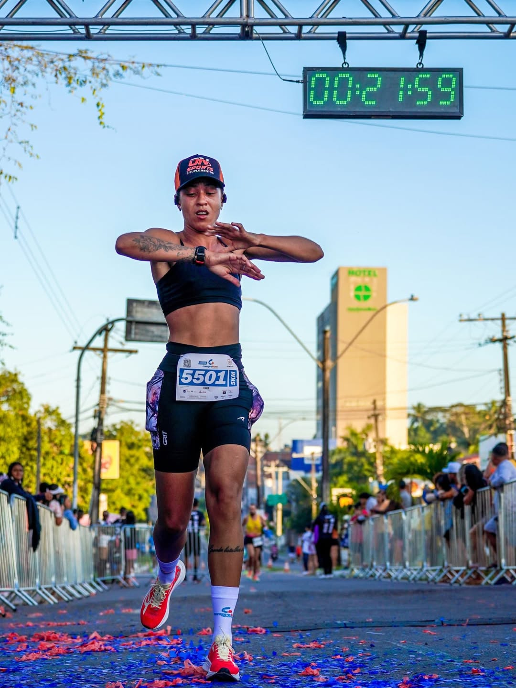

Fisioterapia Esportiva de Alta Performance
Recupere mais rápido.
Performe mais forte.
Lesione menos.
Tratamento especializado para pacientes que não podem parar. Volte às suas atividades com segurança e supere seus limites com ciência e cuidado.
Agendar avaliação
Ciência, dedicação e amor ao esporte
Luana Melo é fisioterapeuta esportiva especializada no tratamento e prevenção de lesões em pacientes de todos os perfis — do público geral ao atleta de alta performance. Com anos de atuação na fisioterapia desportiva, ela combina técnica avançada e escuta ativa para devolver cada paciente ao seu melhor nível — mais rápido e mais seguro.
Fundadora da clínica Luana Melo Fisioterapia, ela acredita que cada corpo tem um potencial único. Seu método integra avaliação biomecânica, reabilitação funcional e pilates clínico para resultados reais e duradouros.
Formação & Credenciais
- CREFITO-F 261175
- Fisioterapia Esportiva — Especialização Avançada
- Instrutora de Pilates Clínico Certificada
- Reabilitação Funcional e Biomecânica
"Parar não é a solução."
Pacientes precisam de estratégia, não de repouso absoluto. Com o protocolo certo, é possível se recuperar sem perder condicionamento e voltar mais forte do que antes.
Avaliação precisa
Cada lesão tem uma causa específica. A reabilitação começa com diagnóstico funcional detalhado, não com protocolos genéricos.
Tratamento ativo
Fisioterapia de alta performance não paralisa o paciente. Mantemos o movimento onde é possível enquanto curamos onde é necessário.
Prevenção contínua
A verdadeira alta performance começa antes da lesão. Identificamos vulnerabilidades e corrigimos antes que virem problemas.
Como funciona sua jornada
Um protocolo estruturado do primeiro atendimento até o retorno completo ao esporte.
Avaliação Funcional
Análise biomecânica completa para identificar a origem da lesão ou limitação de performance.
Protocolo Personalizado
Plano de tratamento criado exclusivamente para o seu corpo, esporte e objetivos.
Tratamento Intensivo
Sessões focadas com técnicas manuais, exercícios funcionais e recursos terapêuticos de ponta.
Retorno Seguro
Alta progressiva com critérios esportivos claros. Você volta ao treino quando seu corpo diz que está pronto.
Para quem é o nosso trabalho
Atendemos pacientes de todos os perfis, do público geral ao atleta profissional.
Corredores e Maratonistas
Tratamento de lesões por sobrecarga, síndrome da banda iliotibial, fascite plantar e otimização da biomecânica da corrida.
Futebol e Esportes Coletivos
Reabilitação de lesões de joelho, tornozelo e quadril. Retorno seguro ao campo com critérios esportivos validados.
CrossFit e Funcionais
Cuidado com overuse, lesões de ombro, lombar e punhos comuns em treinos de alta intensidade.
Musculação e Powerlifting
Prevenção e tratamento de lesões por esforço repetitivo e sobrecarga. Mantenha a evolução sem sacrificar a saúde.
Triatletas e Nadadores
Atenção especial às demandas do ombro, quadril e coluna de atletas multidisciplinares.
Esportistas em Geral
Seja qual for o esporte, nossa clínica está equipada para tratar, prevenir e potencializar sua performance.
Serviços especializados
Cada serviço foi pensado para devolver o paciente às suas atividades com segurança e excelência.
Fisioterapia Esportiva
Reabilitação completa focada nas demandas específicas do esporte praticado.
- Reabilitação pós-lesão
- Retorno esportivo supervisionado
- Terapia manual e eletroterapia
Pilates Clínico
Método terapêutico para fortalecimento, flexibilidade e reequilíbrio muscular.
- Solo e aparelhos
- Foco em core e estabilidade
- Aplicado à performance esportiva
Reabilitação Pós-Cirúrgica
Acompanhamento especializado desde a fase aguda até o retorno total às atividades.
- Protocolo por fase cirúrgica
- LCA, menisco, manguito rotador
- Alta com critérios funcionais
Prevenção de Lesões
Identificação precoce de desequilíbrios e vulnerabilidades antes que virem lesões.
- Screening funcional de movimento
- Correção postural e biomecânica
- Programa preventivo personalizado
Avaliação Biomecânica
Análise detalhada do movimento para otimizar performance e reduzir risco de lesão.
- Análise da corrida e gesto esportivo
- Avaliação postural e de mobilidade
- Relatório com plano de ação
Atendimento Personalizado
Sessões individuais com foco total no paciente, sem adaptações genéricas.
- Agenda flexível e humanizada
- Acompanhamento contínuo de evolução
- Comunicação direta com a Luana
Massagem Esportiva
Técnica manual especializada para recuperação muscular, alívio de tensões e preparação do corpo para o treino.
- Liberação miofascial
- Redução de fadiga muscular
- Preparação e recuperação esportiva
Acupuntura
Técnica milenar integrada à fisioterapia moderna para controle da dor, equilíbrio e recuperação acelerada.
- Controle da dor aguda e crônica
- Redução de inflamação
- Integrada ao protocolo fisioterapêutico
Treinamento Funcional
Programa especializado de retorno ao gesto esportivo, reconectando o paciente com os movimentos específicos da sua atividade.
- Volta ao gesto esportivo
- Reintegração progressiva ao treino
- Alta performance com segurança

Bota Pneumática
A Bota Pneumática é um equipamento de compressão pneumática intermitente que promove recuperação muscular acelerada, melhora da circulação sanguínea e linfática e redução de inchaço. Indicada para uma ampla variedade de pacientes — do atleta ao público geral.
Recuperação muscular
Acelera a eliminação de metabólitos e reduz a fadiga pós-treino, preparando o corpo para a próxima sessão.
Melhora da circulação
Estimula o retorno venoso e linfático, combatendo o inchaço, a sensação de pernas pesadas e o linfedema.
Indicada para gestantes
Tratamento seguro para redução de edemas e melhora do conforto circulatório durante a gestação.
Tratamento do linfedema
Auxilia no controle e redução do linfedema, promovendo drenagem eficiente e alívio dos sintomas.
Premiada como a melhor
da região
Uma conquista que pertence a cada paciente que confiou no nosso trabalho. Esse prêmio é o reflexo de anos de dedicação, estudo e amor pela fisioterapia.
"Melhor Fisioterapeuta Desportiva e Instrutora de Pilates é motivo de muito orgulho. Agradeço a Deus, aos meus pacientes, parceiros e a todos que confiam no meu trabalho. Seguimos firmes, com amor e dedicação à fisioterapia."

Nossos Pacientes
Pacientes de diversas modalidades e perfis que confiaram no nosso método e voltaram às suas atividades com performance máxima.






Sofri uma lesão no joelho e os médicos disseram que levaria seis meses para voltar a treinar. Com o acompanhamento da Luana, voltei ao campo em três meses, mais forte e sem dor. É uma profissional diferente — ela trata o paciente, não só a lesão.
Perguntas frequentes
Não. A consulta fisioterapêutica é autônoma e não depende de encaminhamento médico. Você pode agendar diretamente pelo WhatsApp. Se tiver exames de imagem recentes, é ótimo trazê-los para a primeira avaliação.
O tempo varia conforme o tipo e gravidade da lesão, o esporte praticado e a frequência das sessões. Na avaliação inicial, a Luana apresentará uma estimativa realista baseada no seu caso. Nosso compromisso é com a qualidade do resultado, não com prazos artificiais.
Atendemos pacientes de todos os perfis — do público geral ao atleta profissional. A clínica é especializada em fisioterapia esportiva, mas recebe qualquer pessoa que busca recuperação, qualidade de vida ou melhora do movimento. Cada paciente recebe o mesmo nível de cuidado e atenção.
Na maioria dos casos, sim — adaptamos o treinamento para que você continue ativo sem agravar a lesão. Nossa filosofia é manter o paciente em movimento sempre que possível, com as devidas adaptações e progressão controlada.
A fisioterapia esportiva vai além da eliminação da dor — o objetivo é devolver ao paciente a capacidade plena de realizar suas atividades. Os protocolos consideram as exigências específicas de cada caso, incluindo o retorno às atividades como critério final de alta.
Na primeira sessão realizamos uma avaliação funcional completa: anamnese detalhada, testes de mobilidade, força e padrão de movimento. A partir daí, a Luana apresenta o diagnóstico fisioterapêutico e o plano de tratamento personalizado para o seu caso.
Pronto para voltar à sua
melhor performance?
Agende sua avaliação agora e dê o primeiro passo para uma recuperação eficiente e um desempenho esportivo acima do limite.
Agendar pelo WhatsApp